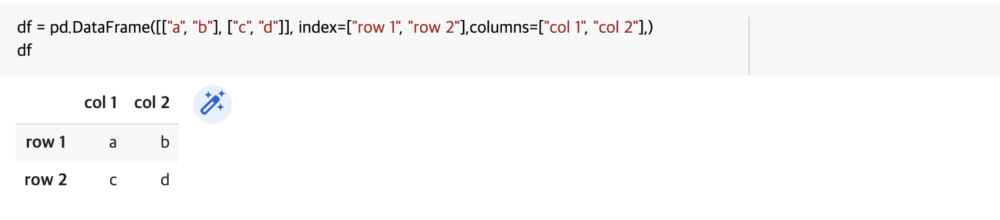
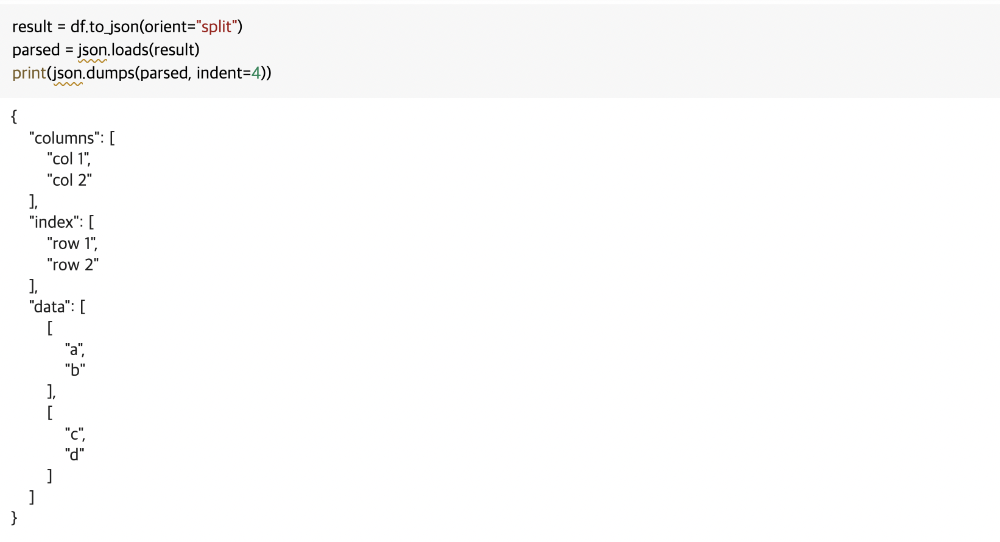
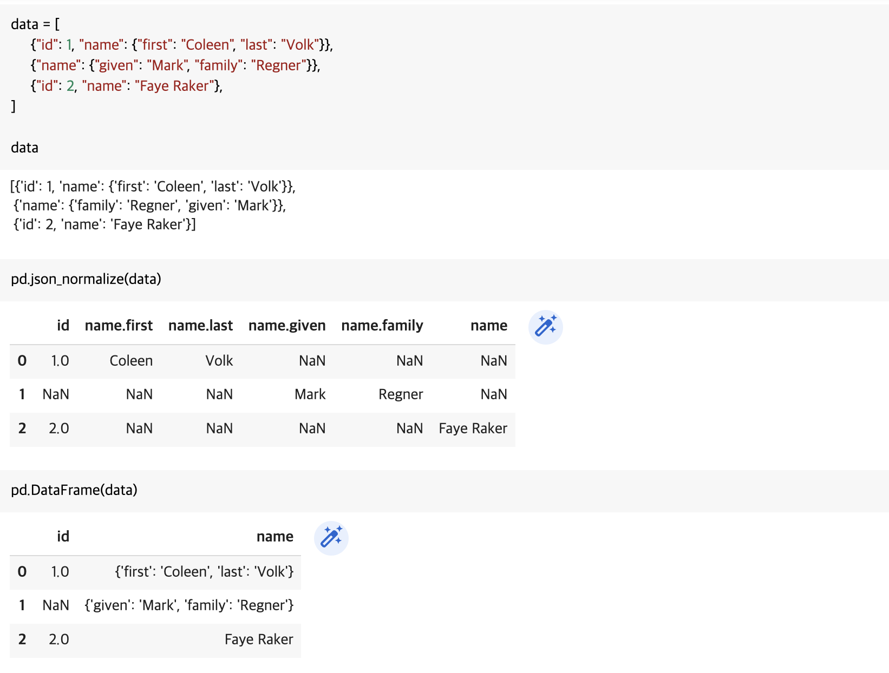
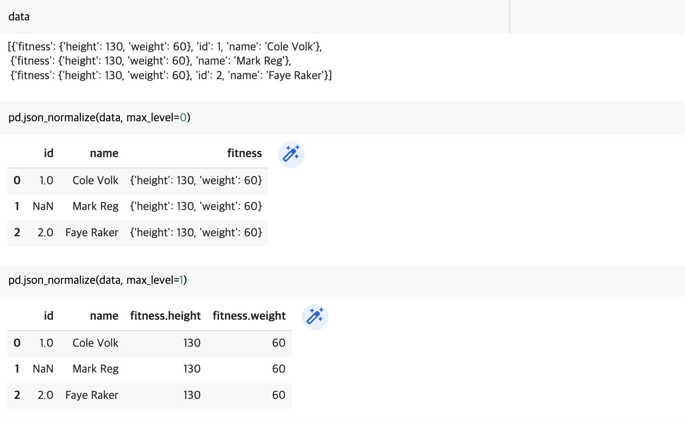
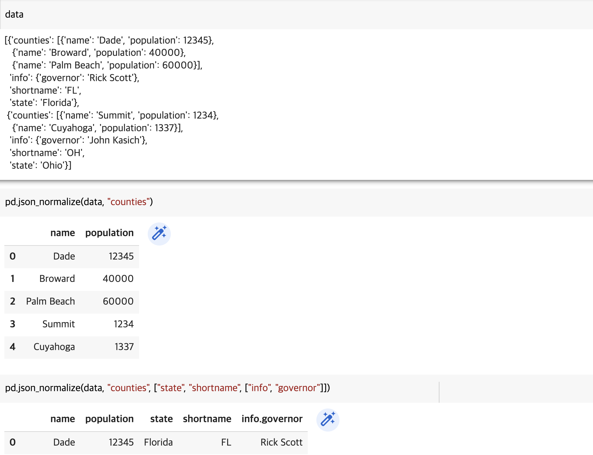

JSON 데이터 다루기
JSON 데이터와 관련된 함수를 알아봅니다.
to_json
to_json() 함수를 통해 데이터프레임을 json으로 변경할 수 있습니다. 먼저, 간단한 pandas 데이터프레임을 생성합니다.
import numpy as np
import pandas as pd
import json
df = pd.DataFrame([["a", "b"], ["c", "d"]], index=["row 1", "row 2"],columns=["col 1", "col 2"],)
df

to_json() 함수를 통해 데이터프레임을 json 문자열로 변경할 수 있습니다. orient 옵션(‘split’, ‘index’, ‘columns’, ‘values’ 등)을 통해 json string 포맷을 지정할 수 있습니다. 참고로, json.loads() 함수는 json 문자열을 python 객체로(json 디코딩), json.dumps()는 python 객체를 json 문자열로(json 인코딩) 변경시켜줍니다.
result = df.to_json(orient="split")
parsed = json.loads(result)
print(json.dumps(parsed, indent=4))

json_normalize
json_normalize() 함수를 통해 python 객체(dict)를 쉽게 데이터프레임으로 변경할 수 있습니다. 참고로, json 형식을 다룰 때는 ‘json 문자열’인지 ‘python 객체’인지 확인하는 것이 중요합니다. json_normalize()는 ‘json 문자열’을 입력으로 사용할 경우 NotImplementedError가 발생합니다.
data = [
{"id": 1, "name": {"first": "Coleen", "last": "Volk"}},
{"name": {"given": "Mark", "family": "Regner"}},
{"id": 2, "name": "Faye Raker"},
]
data
pd.json_normalize(data)
pd.DataFrame(data)

max_level 옵션을 통해 지정한 level까지 데이퍼프레임으로 변환할 수 있습니다.
data = [
{
"id": 1,
"name": "Cole Volk",
"fitness": {"height": 130, "weight": 60},
},
{"name": "Mark Reg", "fitness": {"height": 130, "weight": 60}},
{
"id": 2,
"name": "Faye Raker",
"fitness": {"height": 130, "weight": 60},
},
]
data
pd.json_normalize(data, max_level=0)
pd.json_normalize(data, max_level=1)

meta 옵션을 통해 데이터프레임으로 변환할 필드를 지정해줄 수 있습니다.
data = [
{
"state": "Florida",
"shortname": "FL",
"info": {"governor": "Rick Scott"},
"counties": [
{"name": "Dade", "population": 12345},
{"name": "Broward", "population": 40000},
{"name": "Palm Beach", "population": 60000},
],
},
{
"state": "Ohio",
"shortname": "OH",
"info": {"governor": "John Kasich"},
"counties": [
{"name": "Summit", "population": 1234},
{"name": "Cuyahoga", "population": 1337},
],
},
]
data
pd.json_normalize(data, "counties")
pd.json_normalize(data, "counties", ["state", "shortname", ["info", "governor"]])
